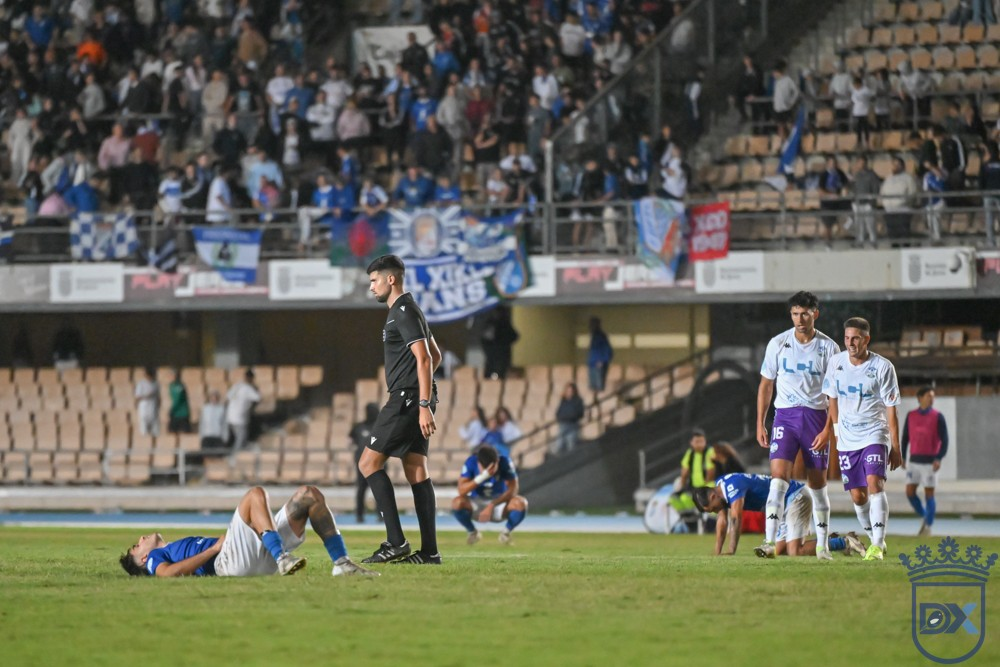
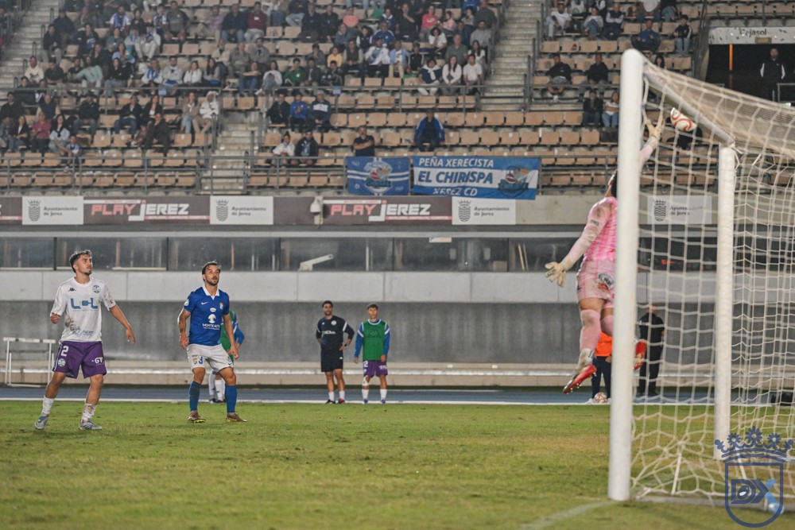

El Lucena sale colíder de Chapín ante un gran Xerez

Foto: Diario XerecistaUn gol de Sergio García a un minuto del final dio la victoria (0-1) al Ciudad de Lucena ante 7.832 espectadores, en un partido que dominó el Xerez CD de principio a fin y en el que los de Abel Segovia remataron dos veces al larguero y vieron cómo otro balón se sacaba bajo palos.
Chapín se quedó sin premio en la séptima jornada. El Xerez llevó el peso del partido durante los noventa minutos, generó ocasiones en las dos partes y apenas concedió nada atrás, pero volvió a chocar con su gran problema de la temporada: la falta de gol. El Ciudad de Lucena, que solo inquietó a Pantoja en un par de acciones, aprovechó una jugada de rechaces en el minuto 89 para llevarse los tres puntos.
El mismo once, con Zequi por Zelu
Abel Segovia repitió el once que sacó un punto el pasado fin de semana en el campo del Betis Deportivo, con un único cambio obligado: Zequi Díaz entró por el lesionado Zelu. Jaime Fernández, Julito y Chuma formaron la línea de ataque, con Raúl López y Mario Peregrina en el centro del campo.
Un primer tiempo de dominio sin premio
El Xerez salió con intensidad, abriendo mucho el campo en la salida de balón y buscando la portería en cuanto recuperaba en el centro del campo. A los cinco minutos, una internada de Guille Campos por la derecha acabó en un centro de Jaime Fernández que Zequi remató alto. Antes del cuarto de hora, Mario Peregrina lanzó a Chacartegui con un pase en profundidad, pero Chuma no acertó a rematar su centro.
El primer aviso visitante llegó antes de la media hora: un centro de Migue desde la izquierda tocó en Isra Cano y estuvo cerca de sorprender a Pantoja. Fue la excepción. Con Raúl López mandando en el centro del campo, el Xerez siguió llegando por las dos bandas, aunque sus centros no encontraron rematador. Al descanso se llegó sin goles y con una ovación de la grada a los suyos.
Larguero, balón bajo palos y otro larguero
La segunda parte arrancó igual. En el primer minuto, Chacartegui cazó un rechace tras un córner botado por Zequi y estrelló su disparo en el larguero. En el 53', un tiro con la derecha de Zequi superó a Hugo, pero Rafa Gálvez sacó el balón bajo palos. El Lucena solo respondió con un disparo flojo de Migue desde la frontal que atrapó Pantoja.

Foto: Diario XerecistaCon veinte minutos por delante, Segovia arriesgó: Rubén Mesa y Fali entraron por Zequi y Moi, y Chuma y Rubén Mesa coincidieron en punta por primera vez esta temporada. El cambio trajo la ocasión más clara del Xerez, una dejada de Chuma para Jaime Fernández cuyo disparo cruzado se marchó a centímetros del palo. Después, Fali encontró a Chacartegui con un pase de 40 metros, sin remate final, y Hugo despejó un disparo de Rubén Mesa.
A cinco minutos del final, Chuma cabeceó al larguero un centro de Raúl López, y poco después Hugo volvió a frenar a Rubén Mesa, que se había revuelto dentro del área pequeña.
El golpe del minuto 89
Cuando el empate parecía el desenlace, una jugada de rechaces dejó el balón suelto dentro del área y Sergio García, que había entrado en el minuto 77, marcó el 0-1. El descuento no dio para más. Chapín, que había empujado durante todo el partido, despidió al equipo con aplausos pese a la decepción.
En los tres partidos con Abel Segovia en el banquillo, el Xerez ha marcado tres goles y ha encajado otros tres. Tras siete jornadas suma 6 puntos; el Ciudad de Lucena llega a 14.
Ficha técnica
Xerez CD: Pantoja; Guille Campos, Moi (Fali, 67'), Manu Galán, Chacartegui; Raúl López, Mario Peregrina (Ismael, 78'); Jaime Fernández (Óscar Lorenzo, 83'), Julito, Zequi (Rubén Mesa, 67') y Chuma.
Ciudad de Lucena: Hugo; Ale Benítez, Rafa Gálvez, Pavón (Porro, 74'), Ortiz, Alberto, Isra Cano (Sergio García, 77'), Manu Molina, Migue (Adrián, 74'), Hugo Fuente (Diego Canty, 62') y Diego Vargas (Joseliyo, 62').
Gol: 0-1 (89') Sergio García.
Árbitro: Cándido Rodríguez Tavio (Comité Canario). Amonestó a Julito (39'), Chuma (51'), Pantoja (79') y Manu Galán (93'), por parte del Xerez CD, y a Joseliyo (69') y Porro (83'), por parte del Ciudad de Lucena.
Incidencias: partido de la séptima jornada del Grupo 4 de Segunda RFEF, disputado en Chapín ante 7.832 espectadores.
🇬🇧 Read in English ← Volver a la portada